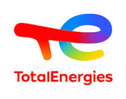
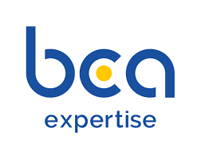
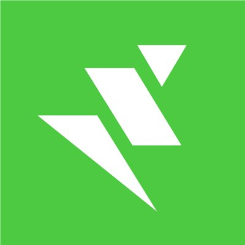
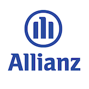
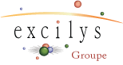

Total Energies - Digital Platform
Coach Agile

La Digital Platform (DP) a été créée pour répondre à un besoin croissant de cloud. Pour cela elle a mis en place un service d'offre multi plateformes et multi cloud.
L'entitée est composée de 6 équipes plateformes (AWS, Azure, Data, API et CICD) et de 4 équipes transerverses (Cyber, SRE, Customer Success et FinOps)
Je les ai accompagné à mettre en place les OKR, afin de partgager et cadrer les objectifs des différentes équipes, arriver à quantifier la valeur apporter aux utilisateurs et mesurer la progression vers ses objectifs et surtout améliorer l'engagement de tous les collaborateurs. Nous avions 2 niveaux d'OKR, stratégique, sur une année et pour l'ensemble de la DP et tactiques sur un trimestre et par équipes.
J'ai travaillé avec les équipes afin de les aider à mettre en place un cadre de travail à l'échelle, reposant essentiellement sur Scrum, au niveau équipes et les OKR pour faire le lien avec les différentes strates. Tout cela était rythmé par macro cycle d'une durée d'un trimestre, avec entre chaque, une période que nous appelions scoping, permettant de prendre le temps de définir ses prochains OKR tactiques en lien avec la stratégie de la DP et la roadmap associée.
Nous avons co-construit ce cadre et l'avons fait évoluer en fonction des retours et des besoins des collaborateurs, en mettant en place tous les rituels nécessaires et le suivi d'indicateurs de delivery et d'amélioration continue.
BCA Expertise
Coach Agile / Scrum Master

A la suite d'un audit, BCA expertise à souhaiter se faire accompagner pour booster son delivery et mieux cadrer sa discovery
J'ai travaillé avec l'équipe produit constitué des Product Manager et des Product Owner. Dans un premier temps, nous avons revu l'ensemble des rôles et des responsabilités. Ce qui nous a permis de prioriser et mieux répartir les différents chantier produits et ainsi mieux canaliser l'effort de l'équipe produit, qui était une douleur pour eux.
En parallèle, j'ai accompagné les différentes équipes de delivery, en les aidant à mettre en place Scrum et adapter les pratiques en fonction de leur besoin. Un focus a été mis en particulier sur l'amélioration continue notamment avec la rétrospective.
L'Oréal
Coach Agile
Dans le cadre d'un projet de refonte de grande envergure, environ 300 personnes, L'Oréal a eu un besoin rapide de Scrum Master opérationnels.
Mon objectif était d'aider un groupe de Scum Master à monter en compétence. Pour cela nous avons commencé par les former au cadre Scrum puis au rôle de Scrum Master.
Après cela, nous avons mis en place des rituels de suivi individuel pour mettre en place un accompagnement personnalisé et aussi de groupe afin de commencer à créer une communauté de pratiques et favoriser l'échange et l'entre-aide.
Job Teaser
Coach Agile

Job Teaser a pour but d'aider de jeunes diplômés à rejoindre le monde de l'entreprise. Pour cela elle propose
une plateforme pour les mettre en relation.
Mon intervention a commencé tout d'abord par accompagner une première équipe à passer doucement vers Scrum.
Dans l'optique d'une réorganisation, toute l'équipe tech a décidé de stabiliser la plateforme. Nous avons choisi
d'utiliser Kanban pour gérer cette maintenance qui avait une durée limitée. Je les ai donc aidés à définir et
faire évoluer leur workflow et mis en place des indicateurs tel que le lead time et le cycle time.
Et enfin, dans la seconde phase de mon intervention, j'ai accompagné l'équipe tech dans le passage aux OKR,
la nouvelle organisation, en les formant tous à Scrum entre autres. Nous avons construit ensemble un framework
d'agilité à l'échelle inspiré d'existants et adapté au contexte particulier de Job Teaser.
Lab de Digital Working - ITG
Scrum Master
La Boost Factory est le programme du service ITG permettant d'accélérer la digitalisation de certains domaines par
l'intermédiaire d'applications web.
En tant que Scrum Master je m'occupais de deux équipes travaillant sur des sujets différents liés à ce programme.
L'idée commune était de simplifier les processus actuels et automatiser certaines actions réalisées avant manuellement.
De plus j'accompagnais des Product Owner fraichement nommés et donc pour certains novices sur ce rôle
2AV ABS
Scrum Master

Allianz Businnes Service (ABS) permet de gérer entre autres les contrats et les données des clients. Le but était donc de
refaire chaque produit d'Aide à l'Acte de Vente (2AV) afin d'utiliser ces web services. Ces outils sont destinés aux agents
afin de réaliser pour les clients des devis d'assurance multirisque habitation, assurance automobile,
de protection juridique, etc...
Sur les principes de LeSS, j'aidais et animais 2 équipes Scrum, une chargée de consommer les web services ABS et d'adapter
aux règles d'assurance française et l'autre du front-end des applications.
Hackathon Valtech - HackValtech #2
Porteur du projet & co-organisateur
Le Hackathon #HackValtech numéro 2 a eu lieu du 17 au 19 mars 2017. Durant 48h, 8 équipes ont travaillé en continu pour sortir
le meilleur produit répondant au thème de la réalité virtuelle ou augmentée au service du retail.
Les partenaires et sponsors qui ont accompagné l'événement :
- Microsoft Dev France
- Valtech Canada
- Laval Virtual
- Qantik
- Eyrolles
- Itescia
SEO Indexing Aggregator
Scrum Master & Développeur
Dans le cadre de projet crédit impôt recherche, nous voulions développer un outil permettant d'agréger des données
d'indexing et calculer des indicateurs. J'ai donc implémenté les appels à différents web services, tel que Google Analytics,
Google adwords, etc... la sauvegarde des données et enfin le calcule des indicateurs.
All in One
Scrum Master
All in One part de la volonté de regrouper tous les outils développés par l'éditeur Générix pour en avoir plus qu'un.
Et sur cette base de proposer à ses différents clients un outil permettant de gérer entre autres ses commandes, ses livraisons
et ses factures auprès de ses fournisseurs.
Sur les principes de LeSS, je m'occupais et animais des feature team en charge de ce regroupement d'outils internes et des
spécificités clientes.
Audit Outil gestion de projet Agile
Consultant
 Dans le cadre de la migration de leur outil actuel, HP Agile Manager, sur leurs serveurs internes, la Société Générale désirait
savoir si cet outil correspondait réellement à leur besoin. Dans un premier temps il s'agissait de correctement définir ce
besoin afin d'établir une grille d'évaluation ainsi qu'une liste d'outils composée de
Jira, HP Agile Manager, Target Process, Rally Dev et Version One. Ensuite il fallait évaluer chaque outil et élire le meilleur.
Dans le cadre de la migration de leur outil actuel, HP Agile Manager, sur leurs serveurs internes, la Société Générale désirait
savoir si cet outil correspondait réellement à leur besoin. Dans un premier temps il s'agissait de correctement définir ce
besoin afin d'établir une grille d'évaluation ainsi qu'une liste d'outils composée de
Jira, HP Agile Manager, Target Process, Rally Dev et Version One. Ensuite il fallait évaluer chaque outil et élire le meilleur.
Hackathon Valtech - HackValtech #1
Porteur du projet & co-organisateur
Le Hackathon #HackValtech made in Valtech France a eu lieu du 27 au 29 mai 2016. Durant 48h, 6 équipes ont travaillé
en continu pour sortir le meilleur produit répondant au thème de la pollution.
Les partenaires et sponsors qui ont accompagné l'événement :
- Microsoft Dev France
- AirParif
- FrenchWeb
- Eyrolles
Portail de la Société Générale
Scrum Master & Développeur Java
Ce portail interne était destiné aux agents de la Société Générale. Le but est d'accéder à
différentes applications ou modules afin de réaliser plusieurs tâches comme par exemple du pilotage
d'indicateurs ou de la saisie d'informations.
Ces projets sont réalisés dans le centre Agile mis en place conjointement entre Valtech et SIOP, service
de la Société Générale. En effet nous travaillons en suivant les pratiques Agiles Scrum et Kanban.
La stack technique, du côté backend, nous avions du classique Java, Spring et Hibernate. Pour le frontend nous avons choisi d'utiliser JQuery et du "fait maison" développées pour un besoin propre au projet comme par exemple de la soumission de formulaires et la gestion des erreurs ou encore des composants graphiques.
De l'intégration continue avec Jenkins et pour gérer les versions nous utilisons GIT.
Valtech Bet
Porteur du projet & Développeur
Pour la coupe du monde 2014, nous avons décidé, deux collègues et moi même, de réaliser une petite
application web pour saisir des pronostics et marquer des points en fonction des résultats. Le but
était d'avoir un classement des meilleurs pronostiqueurs
et de créer une animation autour de cet événement chez Valtech. Nous avons réalisé ce projet avec une
approche Lean Startup dans le but de valider rapidement notre idée de produit.
C'est pour cela que nous sommes partis sur une stack technique maîtrisée avec Java, Spring,
Hibernate, JQuery et Bootstrap pour le côté responsive design.
Lafarge Customer Web Portal
Développeur
LCWP est une application web permettant aux clients de Lafarge de passer des commandes de matériaux, de
suivre les livraisons et de consulter ses factures. Le but est de faciliter et d'automatiser les
échanges entre clients et commerciaux.
Il a été développé pour différents pays comme par exemple la France, l'Allemagne, la Chine, ...
Une équipe Scrum utilisant une stack technique tournant autour de Java 6 et regroupant les
habituels Spring, Hibernate et JQuery UI pour le front. Intégration continue avec Jenkins et gestion des
versions avec GIT.
Site d'apprentissage en ligne
Développeur

Développement d'un site d'apprentissage en ligne, de consultation de cours dans différents formats (PDF,
Power Point, Vidéo, etc...) et d'un moteur de recherche regroupant différentes sources (Google, le blog de la société et
les contenus des cours). Le but premier était de voir les possibilités pour refaire le site existant
développé en Flex avec des technologies plus modernes.
L'équipe était formée de deux développeurs et d'un Scrum Master. Nous avons implémenté ce site en
GWT avec Java 6 et Spring IoC et Security. Nous avions aussi décidé d'utiliser une base MongoDB dans le
but de faire de la RD sur le sujet.